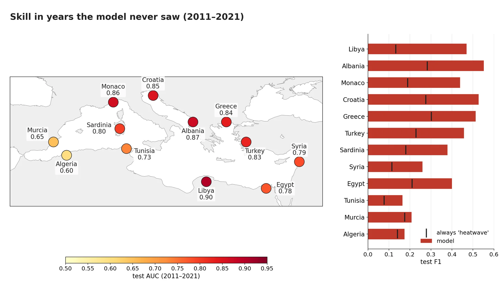
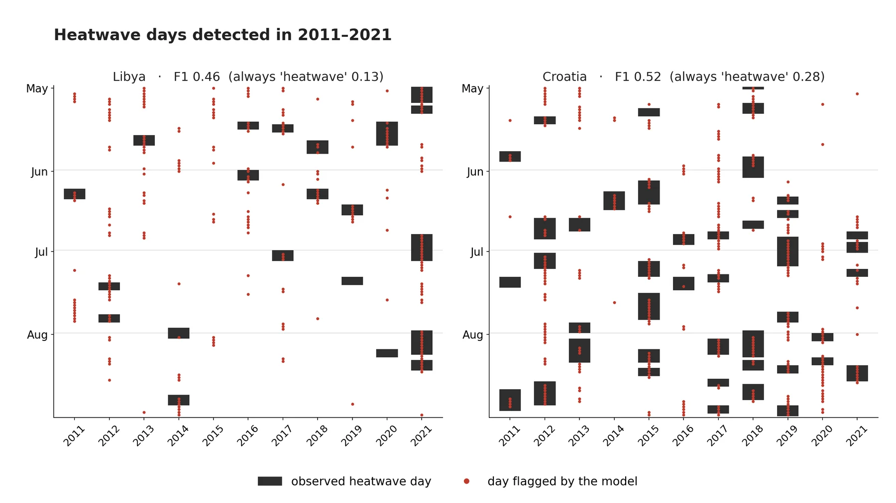
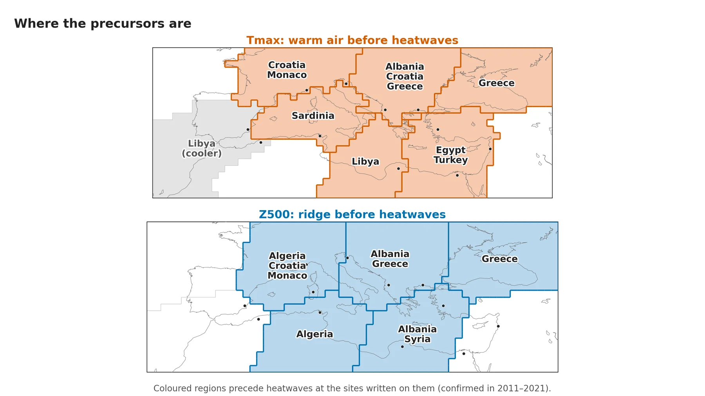
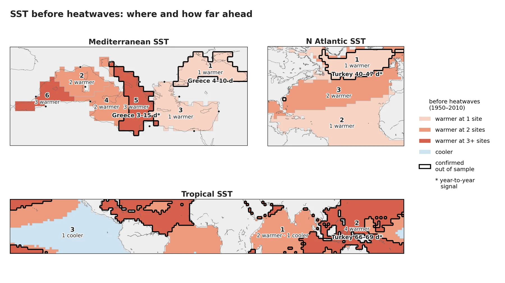
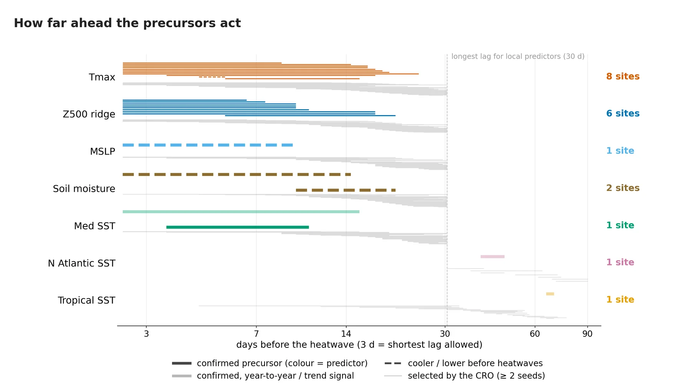

Talk
The figures of the Plinius 19 talk, by slide, with the key messages shown on each results slide.
Study sites and heatwave days per summer, 1950–2010 vs 2011–2021

About this figure
Left: map of the 12 Mediterranean study sites. Right: mean number of heatwave days per summer (May–Aug) at each site in the training period 1950–2010 (grey) and the test period 2011–2021 (orange). Every site has more heatwave days per summer in the test period (e.g. Greece 4.3 vs 21.9).
presentacion/figuras/01_localizaciones_B.png
Local predictors: KMeans clusters of six fields on the 1° EuroMed box

About this figure
KMeans clusters of standardized anomalies (fitted on 1950–1970) for the six local fields on the 1° EuroMed box: Tmax (k = 10), Z500 (8), MSLP (6), soil moisture (10), precipitation (6) and Mediterranean SST (6). Clusters are numbered as in the predictor names, black dots are the 12 sites, and grey nodes are not used (sea for soil moisture, land and excluded nodes for SST). Each cluster can enter the model with a time lag of 3–30 d and a window of 1–30 d; CO2 and the Etesian index, also local predictors, are not drawn.
presentacion/figuras/02_clusters_local.png
Remote predictors: KMeans clusters of seven 2° fields plus NAO, ENSO and IOD

About this figure
KMeans clusters at 2° of Z500 and MSLP over the North Atlantic–Europe, North Atlantic SST, Z500 Asia–North Pacific, tropical SST and tropical OLR (k = 3 each) and tropical Z500 (k = 2), plus the NAO, ENSO and IOD indices; black dots are the sites where they fall inside a domain. Remote predictors can enter with a time lag of 3–90 d and a window of 1–30 d. 'Tropical OLR' is the ERA5 net top-of-atmosphere longwave flux (= −OLR), labelled −OLR in the results figures.
presentacion/figuras/02_clusters_remote.png
The CRO wrapper: from spatio-temporal predictors to selected drivers

About this figure
Conceptual view of STCO-FS: the Coral Reefs Optimization (CRO) searches about 10^219 combinations of clusters, time lags and windows, scores each candidate by the cross-validated F1 of a machine-learning model (logistic regression), and keeps a set of drivers, each a cluster region with a lag window before heatwave day t. The three drivers drawn are real choices of the Albania seed-42 run (Z500 c8, Tmax c2 and Med SST c6), which kept 26 of the 71 drivers in total. The hatched strip next to t marks days never used (time lag ≥ 3 d; at most 30 d for local and 90 d for remote drivers).
presentacion/figuras/03_cro_concepto.png
Skill in years the model never saw: test AUC and F1 by site (2011–2021)

Skilful in years the model never saw
- Test AUC 0.78–0.90 at 9 of 12 sites, above a trend-only model
- F1 twice that of always predicting a heatwave (0.38 vs 0.19)
- Weak in the south-west (Murcia 0.65, Algeria 0.60)
About this figure
Left: test AUC of each site (mean of the 3 seeds) in 2011–2021, years the CRO never saw. Right: test F1 of the model (bar) against always predicting a heatwave day (tick), sites ordered by AUC. Nine sites reach AUC 0.78–0.90, all above a trend-only model; Murcia (0.65) is weak but above the trend, while Tunisia (0.73; trend alone 0.74) and Algeria (0.60; trend alone 0.61) add nothing beyond the warming trend.
presentacion/figuras/07a_skill_map.png
Heatwave days detected in 2011–2021: Libya and Croatia

Detects most heatwave days
- Libya: 80 of 96 heatwave days flagged
- Croatia: 149 of 216
- At a price: false alarms (Libya 175, Croatia 203)
About this figure
Each column is one summer (May–August) of the test period: black = observed heatwave days, red dots = days the model flags (final model of the run with the median test F1 of the 3 seeds, rebuilt exactly from the CRO solution). Libya and Croatia are among the best sites (AUC 0.90 and 0.85). Libya: 80 of 96 heatwave days flagged, with 175 false alarms; Croatia: 149 of 216, with 203 false alarms. Over all runs the model raises more than two false alarms per hit.
presentacion/figuras/07b_detection.png
Where the precursors are: Tmax and Z500 regions confirmed out of sample

Warm air over the site and a Z500 ridge over or next to it
- Tmax confirmed at 8 sites, mostly over the site
- Z500 ridges at 6 sites, often next to the site
- Alps–Balkans ridge shared by Monaco, Croatia, Albania, Greece and Algeria
About this figure
Coloured regions (KMeans clusters) precede heatwaves at the sites written on them: warmer Tmax (top) or a higher Z500, i.e. a ridge (bottom), before heatwave days; grey = cooler before heatwaves. Only confirmed precursors are shown: selected in ≥ 2 seeds, FDR-significant in 1950–2010 and significant with the same sign in 2011–2021 in at least one seed. Tmax: 8 sites, mostly over the site itself; Z500: 6 sites, ridges over or next to the site.
presentacion/figuras/07e_precursor_clusters.png
SST before heatwaves: Mediterranean, North Atlantic and tropical clusters

Warmer seas before heatwaves
- Warmer Mediterranean before heatwaves at 6 sites (1950–2010)
- Confirmed out of sample at Greece (Black Sea, 4–10 days)
- Atlantic and tropical SST: year-to-year signal (Turkey)
About this figure
Fill: clusters whose SST is significantly warmer (red) or cooler (blue) before heatwave days in 1950–2010 at sites that select them in ≥ 2 seeds, darker = more sites. Thick outline: confirmed out of sample (same rule as the lead-time figure), with the site and the window of its best robust seed; * = year-to-year signal with no within-summer anomaly. Warmer seas precede heatwaves at many sites in 1950–2010, but only Greece (Mediterranean, 4–10 d) holds as a within-summer precursor; Turkey's Atlantic and tropical SST mark warm summers.
presentacion/figuras/07f_sst_clusters.png
How far ahead the precursors act, by predictor type

Most precursors act 3–20 days ahead
- Tmax and Z500 ridge: 3–20 days (3 d = shortest lag allowed)
- Soil moisture and MSLP: up to 3 weeks, at few sites
- Remote SST: 6–10 weeks, but only as a year-to-year signal
About this figure
Lag windows (days before the heatwave, log scale; 3 d is the shortest lag allowed). Grey: every site × cluster pair selected in ≥ 2 seeds. Colour: confirmed precursors, i.e. selected in ≥ 2 seeds and, in at least one of those seeds, significant in 1950–2010 after the Benjamini–Hochberg correction and again with the same sign in 2011–2021, drawn at the window of their best robust seed; faded = year-to-year or trend signal with no within-summer anomaly (so the lag is not a lead time); dashed = cooler/lower before heatwaves. Tmax at 8 sites and a Z500 ridge at 6 lead by 3–20 days; MSLP, soil moisture and Mediterranean SST at 1–2 sites; remote SST only at Turkey, as a year-to-year signal. Precipitation, remote Z500/MSLP/OLR, the Etesians, CO2 and the indices have no confirmed pair and are not drawn.
presentacion/figuras/07c_lead_times.png